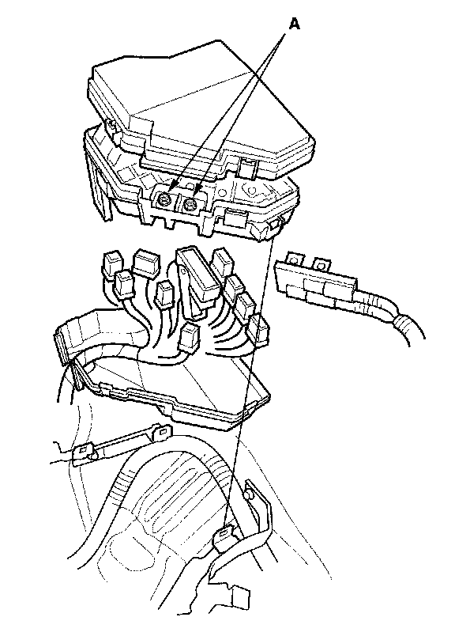

Under-hood Fuse/Relay Box
Under-hood Fuse/Relay BoxRemoval and Installation
Removal
1. Make sure you have the anti-theft code for the audio or the navigation system, then write down the audio presets.
2. Make sure the ignition switch is OFF.
3. Disconnect the negative battery cable, then disconnect the positive cable, and wait at least 3 minutes.

4. Remove the screws (A) for the alternator and battery cable terminals from the under-hood fuse/relay box.
5. Remove the bottom cover from the under-hood fuse/relay box.
6. Disconnect the connectors from the under-hood fuse/relay box.
7. Carefully remove the relays by prying under the base of the relay.
NOTE: Do not use pliers. Pliers will damage the relays, which could cause the engine to stall or not start.
Installation
1. Install the relays and connect the connectors to the under-hood fuse/relay box, then install the under-hood fuse/relay box in the reverse order of removal.
2. Install the removed parts in the reverse order of removal.
3. Connect the positive cable to the battery, then connect the negative cable to the battery.
4. Enter the anti-theft code for the audio or the navigation system, then enter the customer's audio presets, and set the clock.
5. Confirm that all systems work properly.